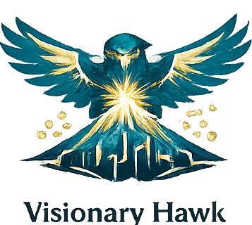
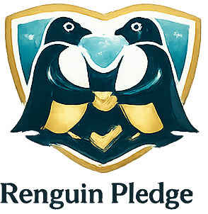
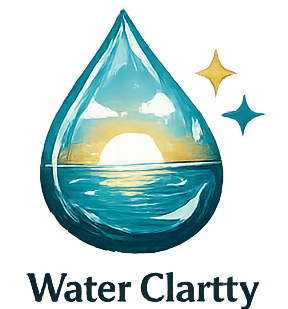
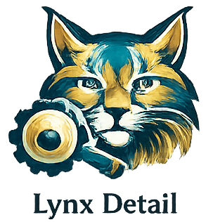
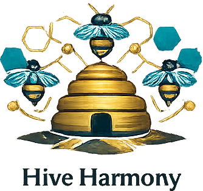
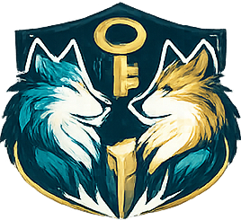
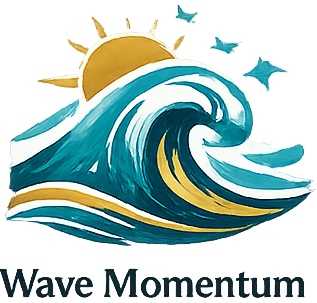
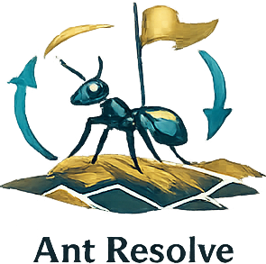

El reproceso no es un error técnico; es una deuda cultural que las empresas está pagando con intereses
Lidero la transformación digital con enfoque en negocio y adopción real. En mercados volátiles, los planes rígidos salen caros. Mi enfoque combina dirección de proyectos (PMP), agilidad y ciencia de datos para convertir el caos operativo en sistemas escalables que eliminan el reproceso.
"Transformar procesos complejos en productos digitales requiere menos instrucciones y mucha más alineación estratégica."
Sobre mí
Construyo soluciones que conectan estrategia, tecnología y ejecución
Soy Kevin Viteri, profesional orientado a la gestión de proyectos, transformación digital, automatización e inteligencia artificial aplicada. Mi trabajo se centra en diseñar iniciativas que no solo funcionen a nivel técnico, sino que generen adopción, claridad operativa y valor para el negocio. He trabajado en entornos donde los problemas no se resuelven con más presión, sino con mejor estructura, mejores decisiones y una ejecución consistente. Me interesa intervenir donde hay fricción, retrabajo, desalineación o procesos que crecieron sin rediseño. Mi enfoque combina pensamiento estratégico, visión de producto, liderazgo humano, métricas de desempeño y capacidad de adaptación. No persigo innovación decorativa. Busco resultados que se sostengan cuando la operación real entra en juego.
Principios de trabajo
Cómo pienso, cómo lidero y cómo ejecuto
Estos principios resumen la forma en la que tomo decisiones, colaboro y construyo valor.

Visionary Hawk
Fomento la creatividad y la evolución constante para mantenerme a la vanguardia.

Penguin Pledge
Asumo cada proyecto con responsabilidad, enfoque humano y resultados concretos.

Water Clarity
Actúo con claridad y honestidad en cada interacción con clientes, equipos y aliados.

Lynx Detail
Busco calidad y mejora continua en cada etapa del desarrollo de productos y procesos.

Hive Harmony
Valoro el trabajo en equipo, el intercambio de ideas y el crecimiento conjunto.

Wolf Code
Construyo relaciones de confianza con base en principios éticos sólidos.

Wave Momentum
Promuevo el aprendizaje constante para mantenerme actualizado y generar soluciones innovadoras.

Ant Resolve
Me enfoco en entender cada entorno, adaptarme continuamente y resolver problemas reales.
Trayectoria
Experiencia orientada a transformación, eficiencia y ejecución con impacto
2023 - Actualidad
Líder de Innovación y Transformación Tecnológica
ContaRS
Defino e implemento iniciativas de automatización y transformación digital con impacto directo en productividad, escalabilidad operativa y reducción de retrabajos.
- Priorización estratégica de proyectos tecnológicos.
- Gestión de stakeholders internos para garantizar adopción efectiva.
- Seguimiento de KPIs operativos, tiempos de ciclo y carga de trabajo.
- Fortalecimiento del accountability y alineación del equipo técnico.
2021 - 2023
Desarrollo de iniciativas de mejora y evolución operativa
ContaRS
Participé en la estructuración y evolución de procesos internos con foco en orden, trazabilidad, automatización progresiva y preparación para el escalamiento digital.
- Detección de cuellos de botella y puntos críticos del flujo operativo.
- Rediseño de procesos con orientación a eficiencia.
- Base operativa para futuras iniciativas de transformación tecnológica.
Etapa académica y docencia
Docente universitario y diseñador de experiencias de aprendizaje
PUCE TEC
Diseño clases, evaluaciones y materiales orientados a tecnología, liderazgo, herramientas digitales y gestión, conectando teoría con aplicación práctica.
- Mentoría de proyectos académicos con enfoque realista y aplicado.
- Uso de herramientas digitales y automatización en el aula.
- Desarrollo de contenidos claros, accionables y orientados a resultados.
Aplicación transversal
Consultoría, estructuración y ejecución de soluciones
Multisectorial
He participado en iniciativas de rediseño de procesos, implementación de soluciones digitales, automatización, análisis y gestión de proyectos en distintos contextos organizacionales.
- Industria, educación, servicios, finanzas y consultoría.
- Traducción de necesidades del negocio a soluciones viables.
- Visión integrada entre operación, personas y tecnología.
Certificaciones y formación
Aprendizaje continuo con foco en gestión, tecnología e inteligencia artificial
Dejar de aprender es una manera elegante de quedarse atrás. Mi formación combina dirección de proyectos, liderazgo, tecnología, ciencia de datos, inteligencia artificial y análisis financiero.
PMP — Project Management Professional
PMI | Certificado
University Mentorship
PUCE | Sep – Oct 2025
Expert in Agile Project Management (SCRUM-KANBAN)
CCE | Jul – Aug 2025
University Teaching Diploma
PUCE | Apr – Jul 2025
Applied Data Science with Python Level II
IBM | Jun 2025
Data Fundamentals & Project Management Fundamentals II
IBM | Apr 2025
Artificial Intelligence Fundamentals with Capstone Project
IBM | Mar – Apr 2025
Specialized Training in Intellectual Property
CEDIA | Feb – Apr 2025
Organizational Leadership
Universidad Santander | Sep – Oct 2024
The Basics of Scrum
Project Management Institute (PMI) | Aug 2024
Finance for Non-Financials
Universidad de Las Américas (UDLA) | Jun – Aug 2024
Agile Methodologies with OKRs
Universidad Santander | Nov – Dec 2023
Financial Evaluation of Projects
Politécnico de Colombia | Aug – Sep 2022
En qué genero valor
Mi trabajo no empieza en el software. Empieza en el problema.
Transformación digital
Diseño iniciativas que conectan cultura, proceso, tecnología y adopción real.
Automatización operativa
Reduzco fricción, tareas repetitivas y tiempos muertos con soluciones útiles.
Gestión de proyectos
Traduzco objetivos estratégicos en entregables claros, priorizados y sostenibles.
IA aplicada
Incorporo inteligencia artificial donde realmente aporta valor y no solo ruido comercial.
Contacto
No hagamos solo ruido: hagamos algo útil, medible y difícil de ignorar.
Canales directos
Puedes escribirme, revisar mis proyectos o conectar conmigo para oportunidades, colaboración o iniciativas de transformación.